HAS LLEGADO A TEYVAT...
Un mundo de fantasía donde los siete elementos fluyen y convergen. En un pasado distante, los Arcontes concedieron a los mortales habilidades elementales únicas. Con la ayuda de tales poderes, sus habitantes transformaron el desierto en una tierra prometedora. Hace 500 años, esta misteriosa civilización se colapsó y el caos se propagó en todos los rincones del territorio.
MONDSTADT
La Capital de la Libertad al noreste de Teyvat.
Entre cadenas montañosas y planicies amplias, el viento de libertad trae consigo el aroma de diente de león y acaricia el Lago de Sidra, llevando a la ciudad en medio del lago la bendición y el favor de Barbatos.
LIYUE
Una ciudad con un puerto próspero situado al este de Teyvat.
Liyue yace imponente entre faldas montañosas, bosques de piedra, bastas planicies y una costa llena de vida, que conforman una tierra llena de riquezas, con cambios de estación claramente definidos y llenos de color. ¿Cuántos obsequios del Arconte Geo yacerán enterrados entre sus montañas?

INAZUMA
Un archipiélago situado en el extremo oriente de Teyvat.
Encara tormentas perpetuas, adéntrate en la isla de las flores de cerezo, en sus playas, los imponentes acantilados y las solitarias montañas, y presencia la eternidad perseguida por Su Excelencia, la todapoderosa Narukami.
SUMERU
La nación de eruditos situada en el medio oeste de Teyvat.
Una tierra exótica en la que coexisten exuberantes bosques tropicales y áridos desiertos, donde crecen y se marchitan innumerables frutos de la sabiduría. Todo viajero que llegue a esta nación podrá adquirir valiosos conocimientos atravesando el bosque y subiendo los escalones que conducen hacia el conocimiento o adentrándose en el desierto y descubriendo sus antiguas ruinas.
FONTAINE
El origen de toda agua se halla en el centro de Teyvat.
Sigue el transcurso del agua, atraviesa la frondosa naturaleza, los densos bosques y el mar de arena y finalmente llegarás a la cuna y el origen de todas las aguas del continente. En lo más alto de las cascadas y en la metrópoli marina que se yergue sobre las planicies, historias nunca oídas y leyendas tiempo atrás olvidadas, como si de una nación sepultada en lo más profundo de las aguas se trataran, anhelan fervientemente la llegada de algún visitante.
NATLAN
La nación de las alianzas situada en el oeste de Teyvat.
Sigue la luz de las llamas a través de los desfiladeros y los valles, donde las antorchas arden con fuerza y donde los fuegos se unen. En los abrasadores campos por los que vagan los saurios, presencia el final de la antigua guerra junto a los valientes guerreros que resisten a la oscuridad.
NOD KRAI
La tierra bendecida por la luna, situada en el noroeste de Teyvat.
Sigue el hilo de plata tejido por la Luna Nueva, atraviesa vientos gélidos y tundras desoladas mientras los lagos nevados, como espejos hechos añicos, reflejan su atemporal resplandor glacial. Los días son amargamente cortos, pero en las noches largas y oscuras, la luz y la canción lunar acariciarán suavemente el rostro de todo viajero. Enciende las lámparas de las torres hasta el día en que la verdadera luz lunar brille sobre esta tierra.